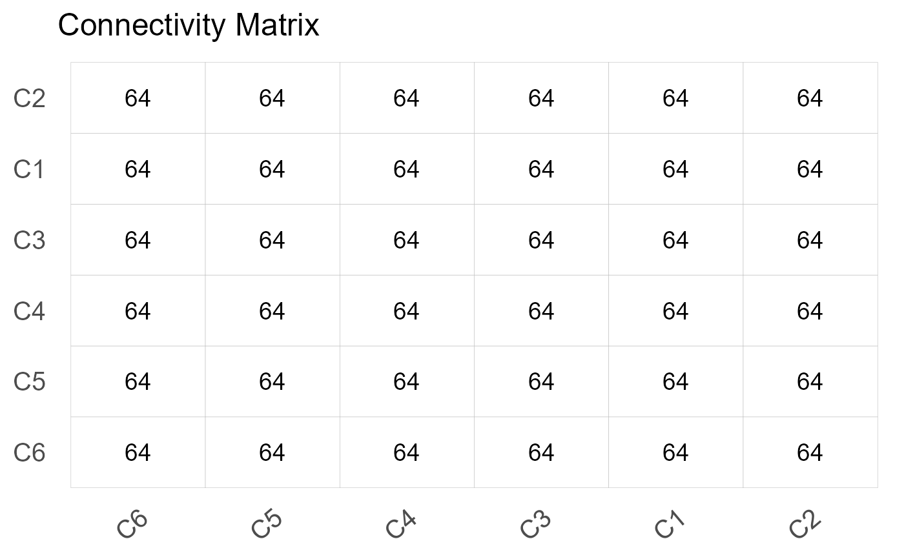
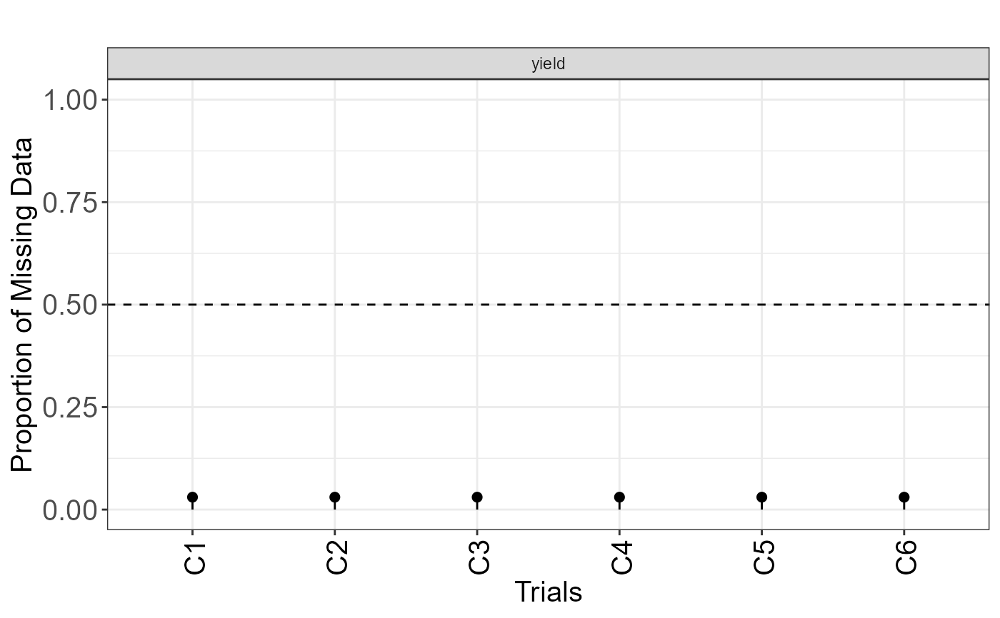

Check Experimental Design
Usage
check_design_met(
data = NULL,
genotype = NULL,
trial = NULL,
traits = NULL,
rep = NULL,
block = NULL,
row = NULL,
col = NULL
)Arguments
- data
A data.frame in a wide format.
- genotype
A character string indicating the column in data that contains genotypes.
- trial
A character string indicating the column in data that contains trials.
- traits
A character vector specifying the traits for which the models should be fitted.
- rep
A character string indicating the column in data that contains replicates.
- block
A character string indicating the column in data that contains sub blocks.
- row
A character string indicating the column in data that contains the row coordinates.
- col
A character string indicating the column in data that contains the column coordinates.
Value
An object of class checkAgri, with a list of:
- summ_traits
A data.frame containing a summary of the traits.
- exp_design_resum
A data.frame containing a summary of the experimental design.
- filter
A list by trait containing the filtered trials.
- exp_design_list
A data.frame containing the experimental design of each trial.
- check_connectivity
A data.frame with the genotype connectivity.
- connectivity_matrix
A matrix with the amount of genotypes shared between each pair of trial.
- data_design
A data frame containing the data used with two additional columns, one realted to the experimental design and a sequential number (id)
- inputs
A list containing the character string that indicates the column in data that contains the genotype, trial, traits, rep, block, row and col.
Examples
# \donttest{
library(agridat)
library(agriutilities)
data(besag.met)
dat <- besag.met
results <- check_design_met(
data = dat,
genotype = "gen",
trial = "county",
traits = c("yield"),
rep = "rep",
block = "block",
col = "col",
row = "row"
)
print(results)
#> ---------------------------------------------------------------------
#> Summary Traits by Trial:
#> ---------------------------------------------------------------------
#> # A tibble: 6 x 9
#> county traits Mean Median SD CV n n_miss miss_perc
#> <fct> <chr> <dbl> <dbl> <dbl> <dbl> <int> <int> <dbl>
#> 1 C1 yield 149. 151. 17.7 0.119 198 6 0.0303
#> 2 C2 yield 56.1 52.1 18.4 0.328 198 6 0.0303
#> 3 C3 yield 87.9 89.2 19.7 0.225 198 6 0.0303
#> 4 C4 yield 145. 143. 17.1 0.118 198 6 0.0303
#> 5 C5 yield 115. 116. 16.4 0.142 198 6 0.0303
#> 6 C6 yield 87.6 87.8 26.6 0.304 198 6 0.0303
#>
#> ---------------------------------------------------------------------
#> Experimental Design Detected:
#> ---------------------------------------------------------------------
#> county exp_design
#> 1 C1 row_col
#> 2 C2 row_col
#> 3 C3 row_col
#> 4 C4 row_col
#> 5 C5 row_col
#> 6 C6 row_col
#>
#> ---------------------------------------------------------------------
#> Summary Experimental Design:
#> ---------------------------------------------------------------------
#> # A tibble: 6 x 9
#> county n n_gen n_rep n_block n_col n_row num_of_reps num_of_gen
#> <fct> <int> <int> <int> <int> <int> <int> <fct> <fct>
#> 1 C1 198 64 3 8 11 18 3_9 63_1
#> 2 C2 198 64 3 8 11 18 3_9 63_1
#> 3 C3 198 64 3 8 11 18 3_9 63_1
#> 4 C4 198 64 3 8 11 18 3_9 63_1
#> 5 C5 198 64 3 8 11 18 3_9 63_1
#> 6 C6 198 64 3 8 11 18 3_9 63_1
#>
#> ---------------------------------------------------------------------
#> Connectivity Matrix:
#> ---------------------------------------------------------------------
#> C1 C2 C3 C4 C5 C6
#> C1 64 64 64 64 64 64
#> C2 64 64 64 64 64 64
#> C3 64 64 64 64 64 64
#> C4 64 64 64 64 64 64
#> C5 64 64 64 64 64 64
#> C6 64 64 64 64 64 64
#>
#> ---------------------------------------------------------------------
#> Filters Applied:
#> ---------------------------------------------------------------------
#> List of 1
#> $ yield:List of 4
#> ..$ missing_50% : chr(0)
#> ..$ no_variation : chr(0)
#> ..$ row_col_dup : chr(0)
#> ..$ trials_to_remove: chr(0)
#>
# Plotting Connectivity Matrix
plot(results, type = "connectivity")

# Plotting Missing Data
plot(results, type = "missing")

# }